Welkom!
Gezellige bruine kroeg aan de langste toog van Europa, de Oude Markt. Een plaats waar men weet hoe een goeie pint getapt moet worden. Muziek van de jaren '60 tot nu en regelmatig eens live optredens. Sportwedstrijden worden (op vraag) uitgezonden op groot scherm. Alleen of in groep? Iedereen die zich wil amuseren is welkom in Café Revue!
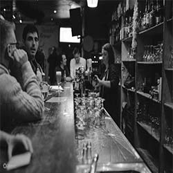
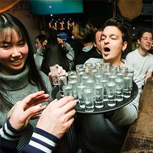
 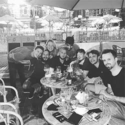
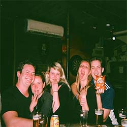
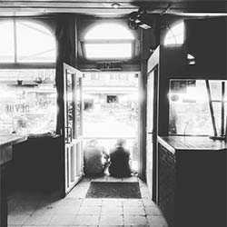
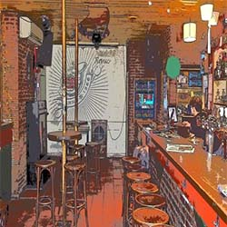
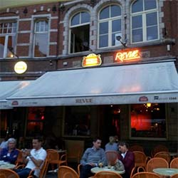
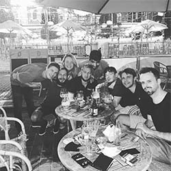
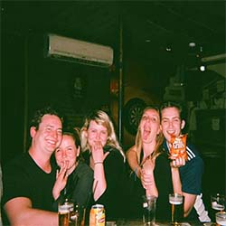
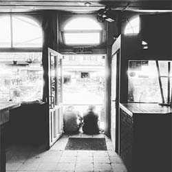
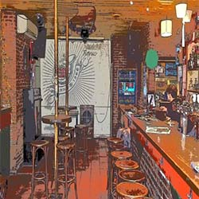
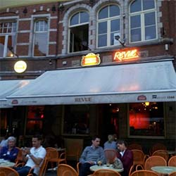
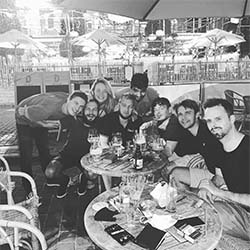
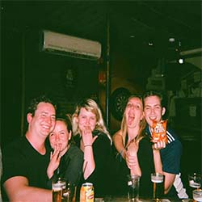
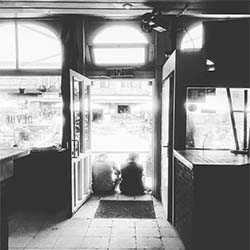
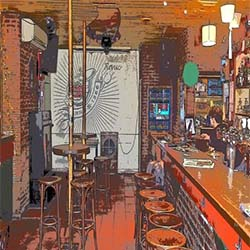
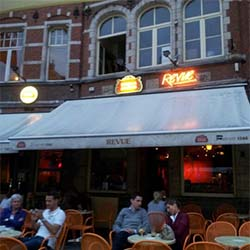